Improving satellite measurements of clouds and precipitation using machine learning
Simon Pfreundschuh simon.pfreundschuh@chalmers.se
The importance of water
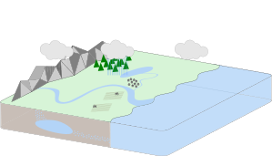
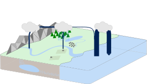
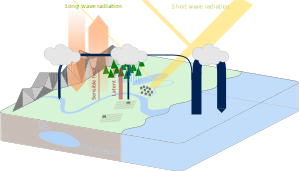
Observing the hydrological cycle
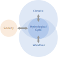
Observing the hydrological cycle

Terminology
- Hydrometeors: Collective term for the frozen and liquid particles that make up clouds and precipitation
- Precipitation: Any hydrometeors large enough to fall down (rain, snow, graupel, hail).
Outline
- Satellite observations of hydrometeors
- From observations to measurements
- Results
- Summary and future work
Satellite observations of hydrometeors

Orbit types
Sensor types
Sensor types
Synergies
- Problem
- Observations at different wavelengths and different sensor and satellite types have complementary characteristics
- Solution
- Combine strengths of different sensor and satellite types
- The Global Precipitation Measurement (GPM) produces (quasi) global measurements of precipitation
at half-hourly resolution using
- Core observatory with radar and passive microwave sensor
- Constellation of passive microwave sensors
- Geostationary sensors


From observations to measurements
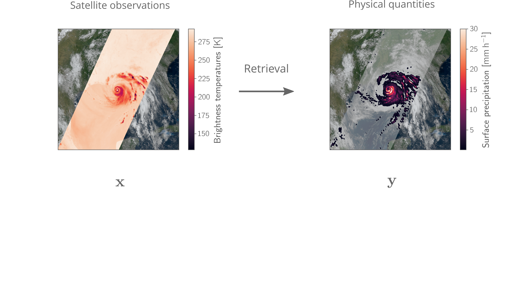
From observations to measurements
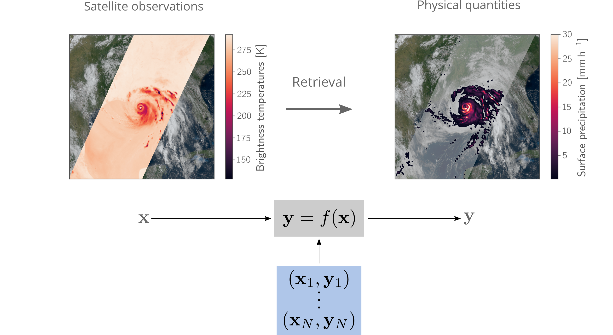
Neural networks (NNs)
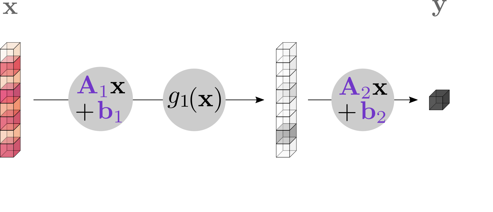
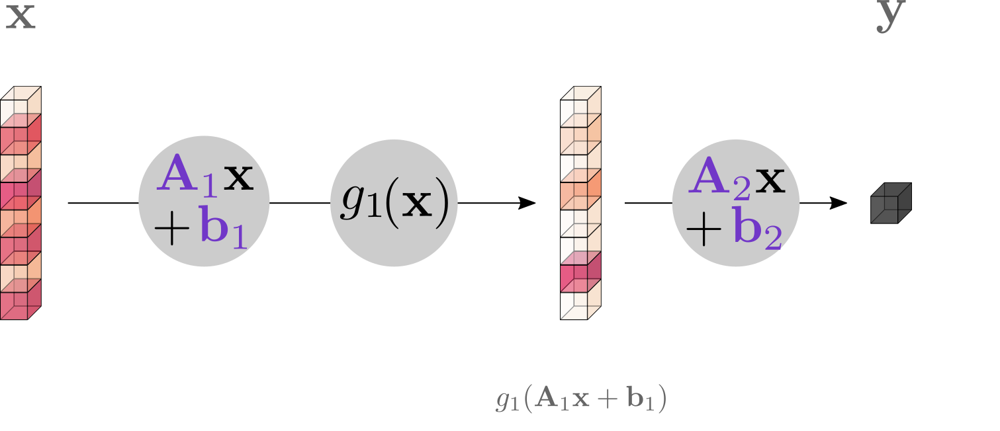
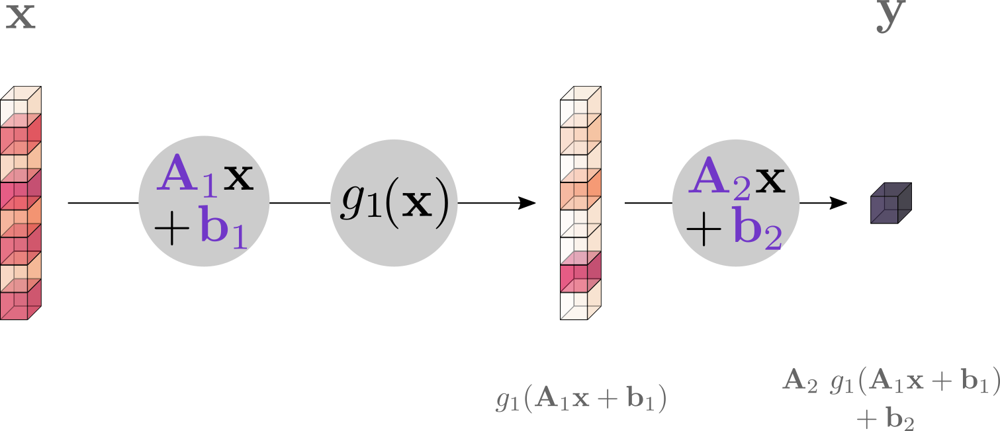
Neural networks
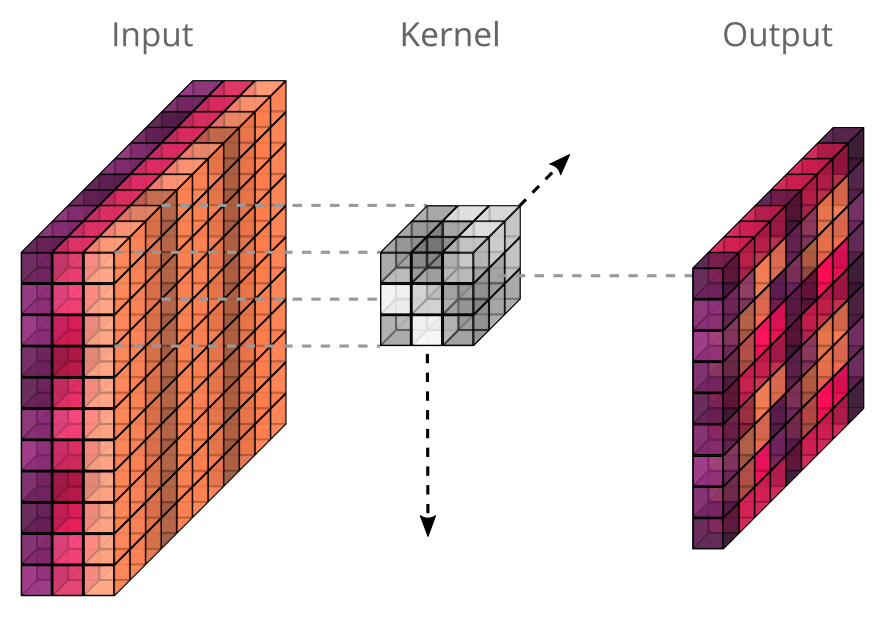
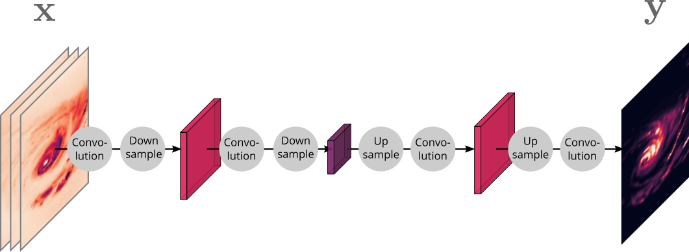
The retrieval as an inverse problem
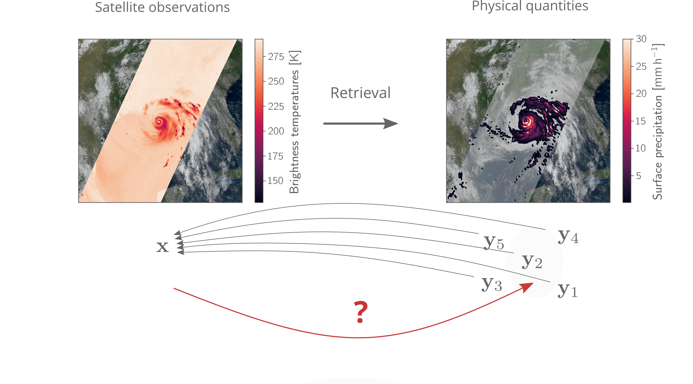
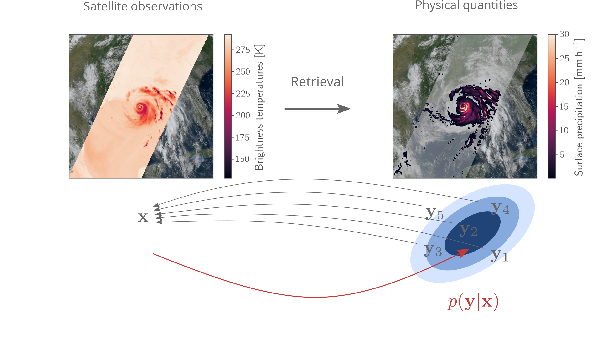
Results
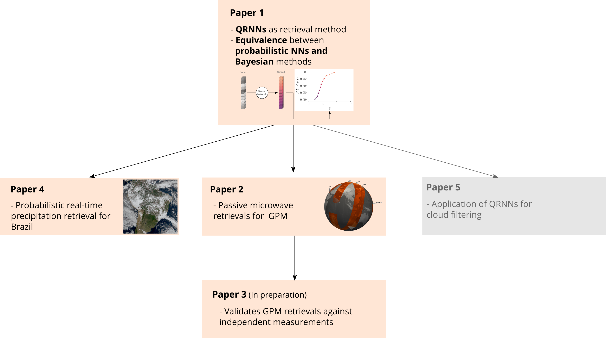
Paper 1
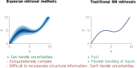
Paper 1
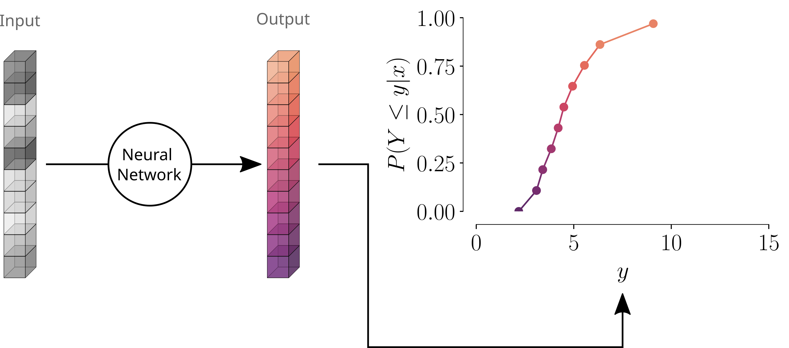
Paper 1
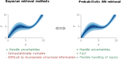
Paper 2
- Background
- The Goddard Profiling Algorithm (GPROF) is used to retrieve surface precipitation and hydrometeor profiles for the passive microwave observations of GPM
- Research questions
- To what extent can the retrieval be improved if the current method is replaced with an equivalent neural-network-based implementation?
- Can further improvements be realized if spatial information is included in the retrieval?
Paper 2
- Background
- The Goddard Profiling Algorithm (GPROF) is used to retrieve surface precipitation and hydrometeor profiles for the passive microwave observations of GPM
- Research questions
- To what extent can the retrieval be improved if the current method is replaced with an equivalent neural-network-based implementation?
- Can further improvements be realized if spatial information is included in the retrieval?
Paper 2
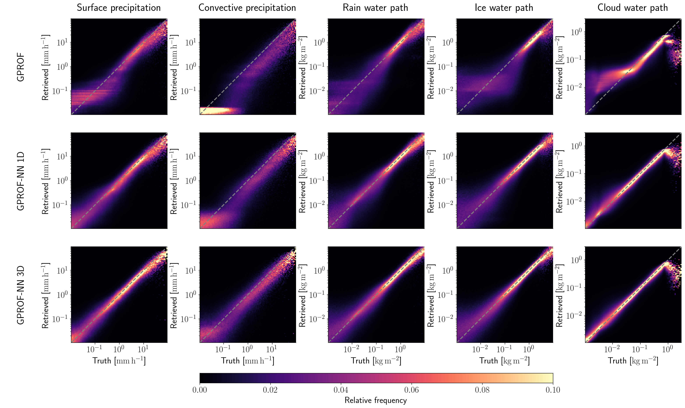
Paper 3
Paper 3
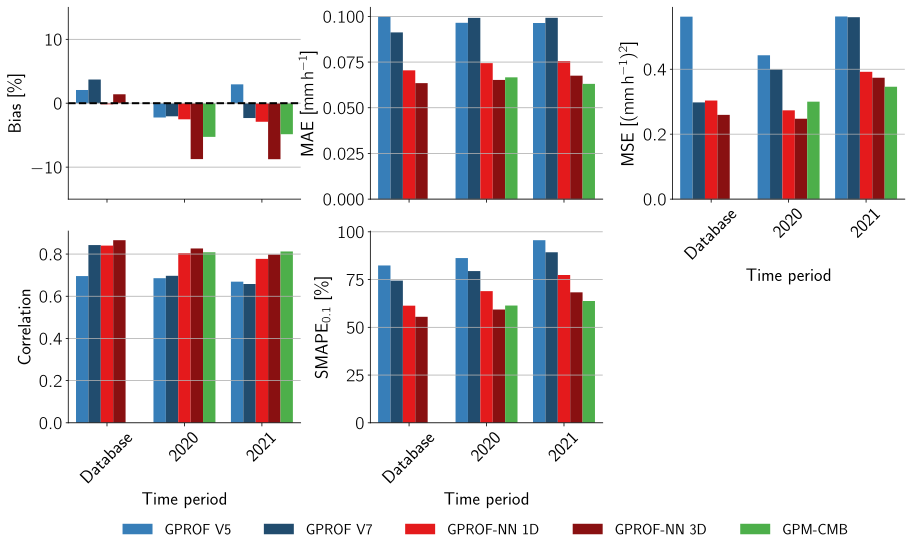
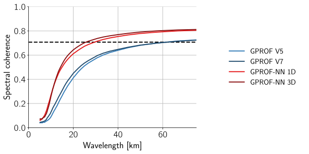
Paper 4
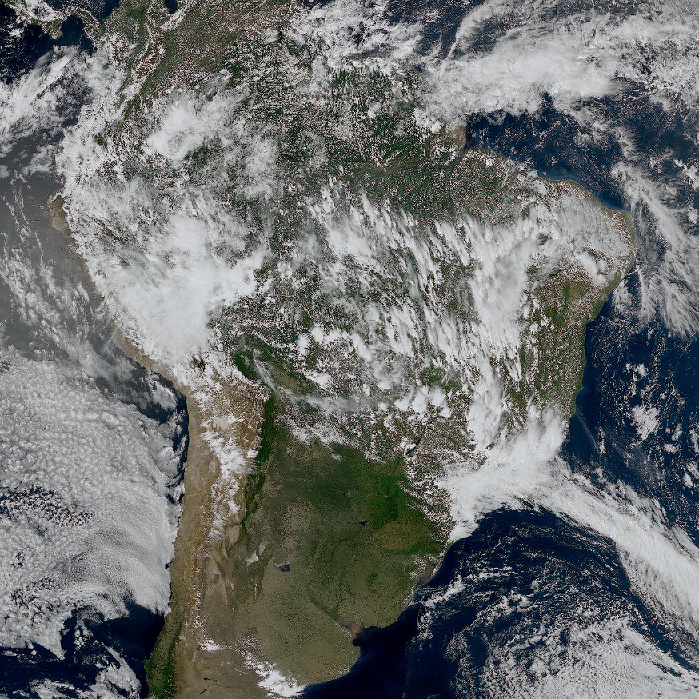
Paper 4
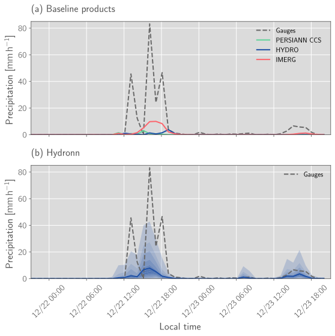
Summary and future work
- Principal results
- Established equivalence between Bayesian retrieval and probabilistic NNs
- Demonstrated advantages of deep-learning-based retrievals
- Retrieval algorithms planned for use in operational processing
- Next steps
- Operational implementation of GPROF-NN retrievals
- Operational implementation of Hydronn retrievals
Outlook
Appendix
Satellite observations across the electromagnetic spectrum
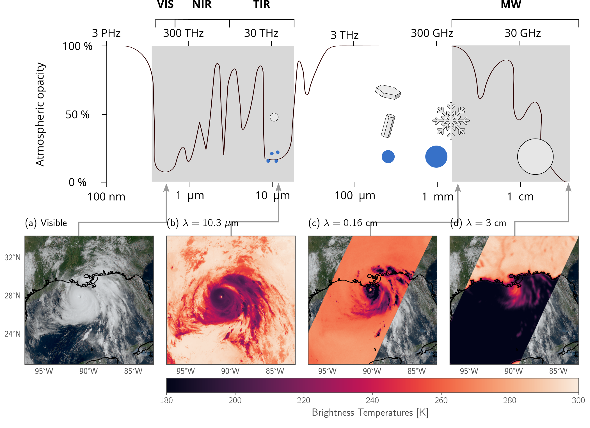
Contributions to total precipitation
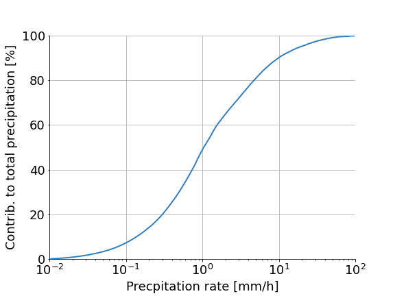
Scientists and code
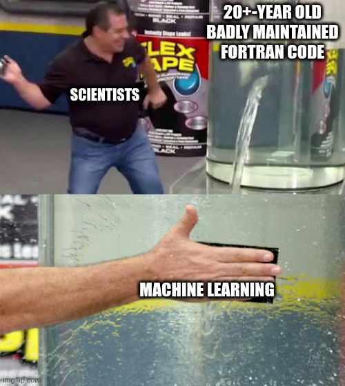